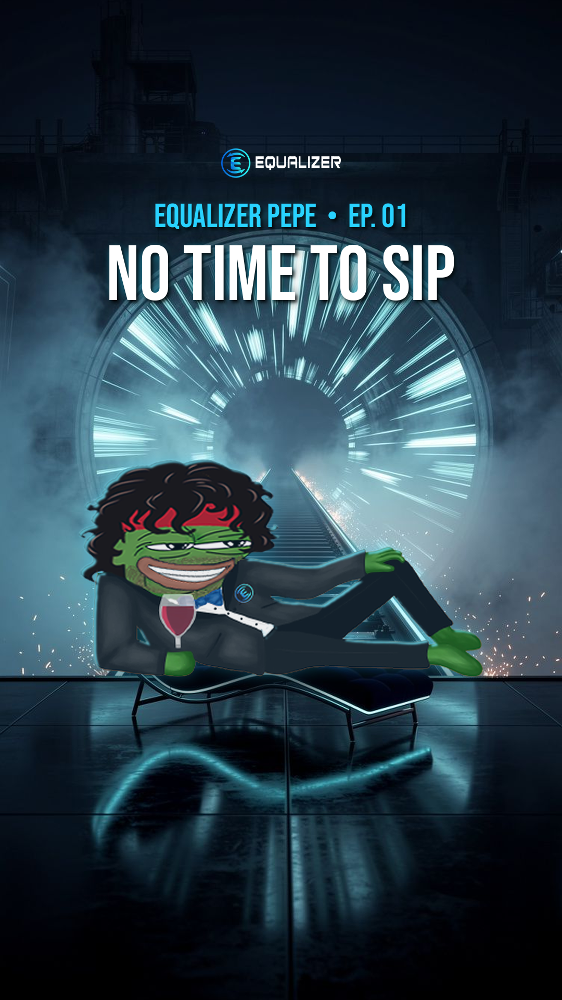
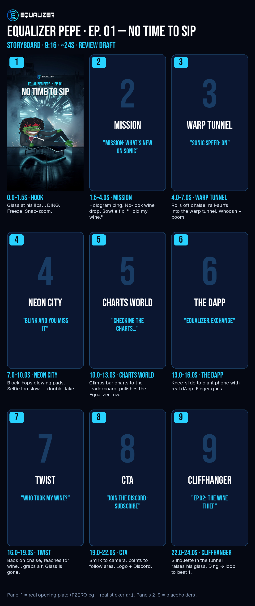

Equalizer Pepe · EP. 01 — “No Time to Sip”
Opening plate (1080×1920) — real sticker Pepe composited on a text-free PZERO background. Top 250px / bottom 420px kept clear for platform UI.



Storyboard

Equalizer Pepe — Episode 1: "NO TIME TO SIP"
Format: 9:16 vertical, ~24s, YouTube Shorts / Instagram Reels / TikTok Brand: Equalizer Exchange (equalizer.exchange) — native liquidity marketplace DEX on Sonic · X: @Equalizer0x · $EQUAL Status: REVIEW ONLY — storyboard draft, nothing posted.
Logline: Equalizer Pepe is one inch from his first sip of red when a ping says something new just dropped on Sonic — so he hands the wine to nobody, warps through Sonic at full speed, climbs the charts, points the world to the Equalizer dApp… and comes back to find someone has stolen his glass.
Running gag (series spine): Pepe NEVER gets to finish his sip. Every episode starts with the glass at his lips and something new on Sonic interrupts him.
Beat sheet (~24s)
Total: ~24s.
Facts guardrail: No APRs, prices, TVL, rankings, volumes, partnerships or price promises anywhere — on screen, in VO or in captions. The charts world shows abstract bars only (no real numbers, no DefiLlama logo/trademark). The "something new on Sonic" ping stays generic unless Blake supplies a real, verified update for that day's episode.
Series bible
Pepe's personality rules
- Cool first, chaos second. He never panics — he chooses chaos. Unbothered smirk in every frame, even mid-disaster.
- Always on a mission. Every episode he gets a "ping" and goes — no hesitating, no explaining.
- Swagger in the small stuff. No-look placements, bowtie adjustments, finger guns, perfect landings — and one slick move that backfires per episode.
- Never gets to sip. The wine is his eternal unfinished business.
- He's the guide, not the shill. He points people to Equalizer and Sonic; he never quotes numbers or promises gains.
- Speaks rarely. Max 1–2 short lines per episode. The face does the talking.
Recurring gags & catchphrase ideas
- The interrupted sip (cold open of every episode).
- "Hold my wine." (his mission-accept line)
- The no-look wine placement — and whatever happens to the glass while he's gone.
- Bowtie adjustment = "mission mode on".
- Too-fast-for-the-selfie gag (Sonic speed).
- Catchphrase ideas: "Liquidity lives here." · "Too fast. Love that." · "Equalize it." · "Back before the wine breathes."
- Episode titles in Bebas Neue: "EP. XX — [3–4 WORDS]".
Visual rules
- 9:16, 1080×1920. Safe zones: nothing important in the top ~250px or bottom ~420px (platform UI); keep key action away from the right ~130px (like/comment buttons).
- Palette: deep navy (#05070F–#0B1630) + electric cyan (#28D2FF), white type; small warm accents only (his red headband, the red wine, orange sparks).
- Pepe is ALWAYS the real sticker art (curly hair, red headband, black tux, blue bowtie, Equalizer pin, red wine) composited in code — never AI-redrawn — for on-model consistency. New poses = new hand-made sticker art from the art team, not AI.
- All text in code (PIL, Bebas Neue), never AI-generated. AI backgrounds must be text-free, logo-free, character-free.
- Equalizer logo small, from the brand pack only. Real dApp UI shown via actual screenshots.
- Loopable endings: last frame/sound cuts back to the first.
Future episode ideas
- EP. 02 — The Wine Thief: Pepe chases the glass-snatching silhouette through Sonic's neon back alleys — it leads him straight to a liquidity pool.
- The LP Pool Party: Pepe throws a party at a pool that turns out to be a liquidity pool; he explains pairing two tokens with a cannonball.
- Bridge Run: Pepe sprints across a neon bridge into Sonic, racing a wall of slow-loading spinners from "elsewhere".
- The Vote: Pepe campaigns like a politician for a pool to get emissions in the epoch vote — kissing babies, shaking hands, finger guns.
- Pepe vs. the Clock: Pepe tries to do one thing slower than a Sonic block confirms. He loses every time.
Production notes (per beat)
Pipeline per beat: (1) PZERO flux-2-pro text-free 9:16 background plate per location (≈0.009 USDC each); (2) composite the real sticker Pepe in code (scale, contact shadow, cyan rim light, colour grade) to make the beat's keyframe; (3) optional PZERO image-to-video on the background-only plate for ambient motion (speed lines, fog, sparks, city lights) — 3–5s per beat; (4) animate the real sticker as a 2.5D cut-out layer in code / editor (position, scale, rotation, squash-and-stretch, motion blur, puppet-pin for arm moves) over the moving plate, so Pepe stays exactly on-model; (5) all captions, titles, CTA cards rendered in code (Bebas Neue); (6) SFX/music layered in edit; export 1080×1920, H.264, ~24s.
Budget note: ~6 more text-free background stills ≈ 0.05 USDC total. Image-to-video jobs were NOT run for this storyboard (cost TBD per job — quote before running).